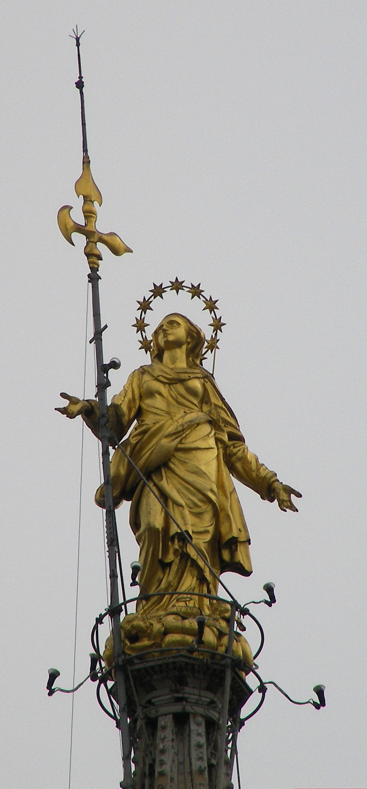
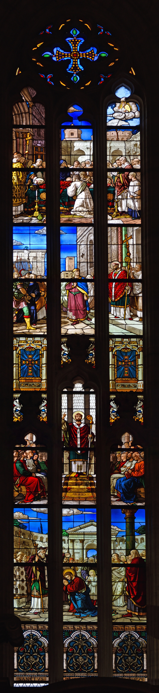
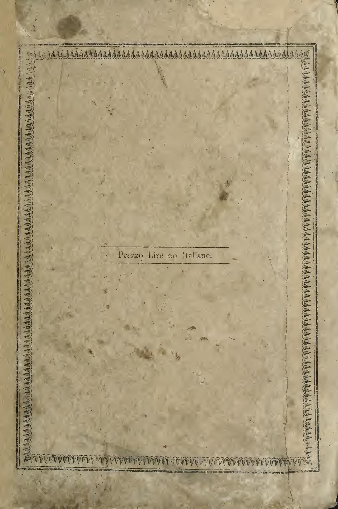
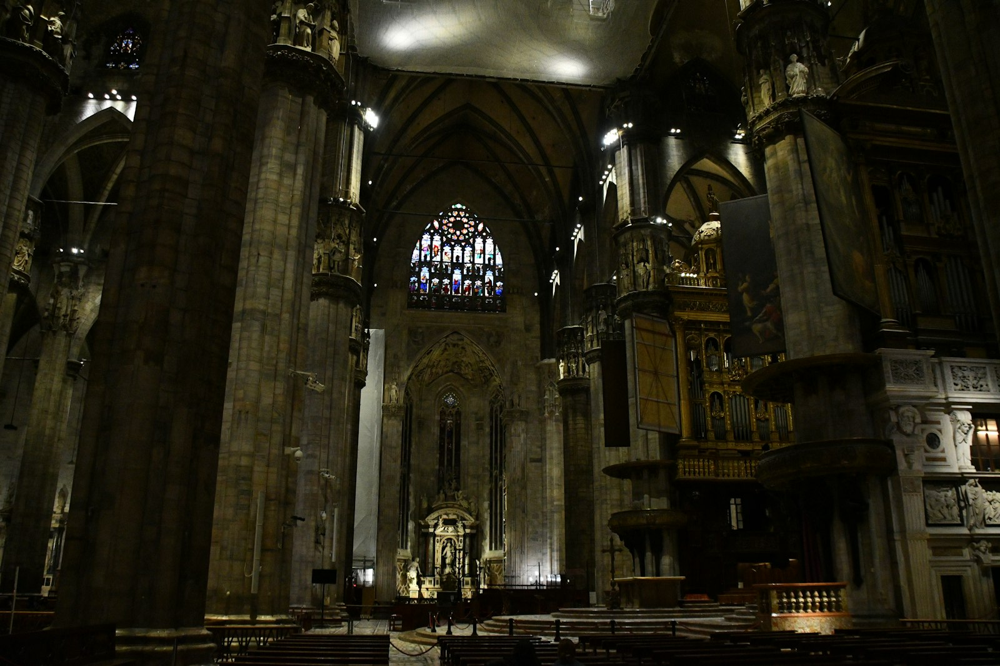
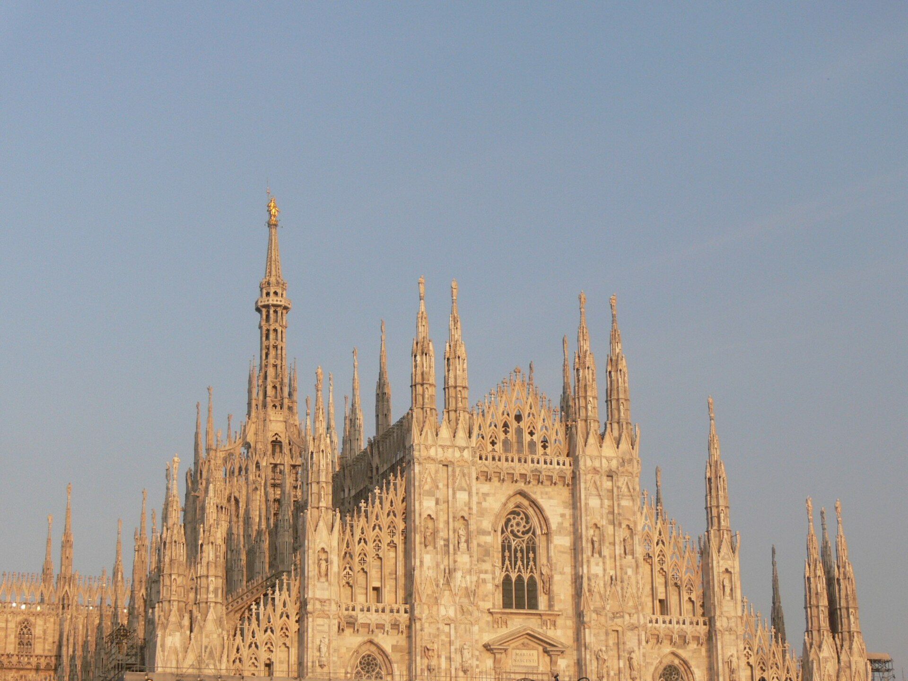

世界第二大教堂（仅次于塞维利亚）、意大利最大。1386 年维斯孔蒂家族奠基，直到 1965 年最后一扇铜门落成才算“完工”--600 年工期的哥特巅峰。屋顶露台 9000 平方米的大理石地面可以直接行走，是欧洲最独特的登顶体验。
看点路线
Il Percorso
- 1电梯直达屋顶露台：在尖塔森林间穿行，晴天远眺阿尔卑斯
- 2露台近观金圣母 Madonnina：米兰的精神海拔基准点
- 3内部：世界最大彩色玻璃窗群与圣巴尔多禄茂雕像
- 4地下考古区：古洗礼池与圣特克拉遗址
重点看点
Il Duomo · 6 个必看

屋顶尖塔森林
135 座尖塔、9000 平方米可步行的大理石屋顶。穿行在飞扶壁与尖塔之间，指尖可以碰到 600 年前石匠留下的凿痕--欧洲没有第二座教堂允许你这样“住进”哥特建筑的结构里。

金圣母像 Madonnina
4.16 米高的镀金圣母立于主尖顶，总高 108.5 米。她是米兰的不成文“限高”：2010 年代前的摩天楼都在她之下，之后的超高层（如垂直森林）都在顶上安一座小圣母致敬--城市愿意被一座雕像“管着”，这很米兰。

彩色玻璃窗群
侧墙 40 多扇巨窗，最大一扇 27 x 9 米，绘着圣徒生平。下午阳光斜射时，中殿地面上流动着红蓝金的光斑--哥特教堂的“神性照明系统”，600 年后依然满电。

圣巴尔多禄茂雕像
被活剥殉道的圣徒肩搭自己的皮--解剖学上惊人准确，观感上极度震撼（他的皮上还挂着脸）。它在教堂内右后侧，是艺术史上最瘆人也最被低估的雕塑之一：反宗教改革时期的“死亡教育”教具。

地下考古区
教堂地下叠着古罗马街道、早期基督教洗礼池（圣安布罗斯时代）与中世纪墓室。米兰是罗马帝国晚期的首都（313 年《米兰敕令》在此颁布）--大教堂的地基，就压在帝国的心脏上。

外立面
拿破仑下令赶工完成的新古典-哥特混合立面。1805 年 5 月 20 日，他在这里加冕为意大利国王（奥地利皇后设计的王冠自己戴上）。今天傍晚立面被夕阳染金，是米兰最奢侈的免费景观。
历史故事
Le Storie
壹六百年工地
1386 年，大公吉安·加莱亚佐·维斯孔蒂奠基。他把 Candoglia 山谷的大理石开采权赐给“大教堂工厂”（Fabbrica del Duomo），免税条件是：石头只能给大教堂用。
工期跨过哥特、文艺复兴、巴洛克、新古典每一场风格革命，历代建筑师互相“修正”：立面方案改了几十稿，尖塔修修停停。马克·吐温 1867 年来访时惊叹它是“诗歌一样的石头”，也吐槽了它永远在修。
1965 年最后一扇铜门安装完毕，官方宣布“完工”--但 Fabbrica 至今仍在运转。米兰人有一句话：“大教堂完工之日，就是世界末日。”
贰拿破仑的加冕与“完工令”
1805 年，已当上意大利共和国总统的拿破仑决定“升级”为意大利国王，地点选在米兰大教堂--问题在于，教堂立面还是个半成品毛坯。
他一纸命令：工期倒排，立面必须赶在加冕礼前完成。石匠三班倒，资金从法国国库直拨。5 月 26 日加冕大典如期举行，立面勉强立起。
这段“赶工史”给大教堂留下一个彩蛋：立面新古典风格与侧墙哥特风格不完全统一，建筑史上称之为“拿破仑补丁”。从正面看是罗马，绕到侧面才是米兰。
叁大理石也会生病
20 世纪后期，米兰的工业污染让 Candoglia 大理石严重风化：雕像表面酥碱脱落，尖塔细节变脆。1980 年代启动“大修复”，数百根柱雕被逐一替换，旧件存入 Fabbrica 的“石雕档案馆”。
今天 Fabbrica 的雕刻工坊仍在用中世纪的技法补刻新雕像--2019 年还换上了一尊新的先知像，媒体称之为“600 年工地的最新一条 commit”。
这也解释了那笔 €2-3 的教堂门票：它实质是“保养费”。你的每一次登顶，都在给下一根柱子续命。
肆金圣母与“不能高过我”
1774 年，4.16 米的镀金圣母像立于主尖顶，总高 108.5 米--从此成为米兰的不成文“限高”。
20 世纪的摩天楼们各显神通致敬：皮雷利大厦（1958，127 米）建成时舆论哗然；垂直森林（2014）干脆在顶楼安了一座小圣母像--城市愿意被一座雕像“管着”，这很米兰。
登顶时近观 Madonnina 的镀金表面：二战时她曾被蒙上布套防空袭，战后第一次“露脸”全城敲钟。
伍屋顶上的“森林步道”
9000 平方米的屋顶露台可以步行：穿行在 135 座尖塔与飞扶壁之间，指尖能碰到 600 年前石匠的凿痕--欧洲没有第二座教堂允许这样“住进”哥特结构里。
石板地面有细微的坡度与排水槽--屋顶本身就是一件水利工程。晴天向西看，阿尔卑斯山线清晰可见。
黄昏时段登顶的最佳路线：17:00 上（看夕阳染金大理石）、19:00 下（看华灯初上）--一张票收两场演出。
陆圣巴尔多禄茂与他的皮
教堂内右后侧的圣巴尔多禄茂雕像（Marco d'Agrate，1562）：被活剥殉道的圣徒肩搭自己的皮--皮上还留着脸。底座铭文写着“我并非波提切利所雕”（蹭了个奇怪的热点），作者的自尊心可见一斑。
解剖学上惊人准确（艺术家显然研究过真正的 flaying），观感极度震撼--反宗教改革时期的“死亡教育”教具。
它是艺术史上最瘆人也最被低估的雕塑之一。找到它通常需要问工作人员：藏得深，是刻意还是巧合，没人说得清。
柒玻璃墙的“中世纪电影”
侧墙 40 多扇巨窗（最大 27x9 米）绘满圣徒生平--下午阳光斜射时，中殿地面流动着红蓝金的光斑。
这些窗多数由 15-16 世纪的米兰与外国工坊捐赠，每一扇的下方都标着捐赠者行会：织工、金匠、公证人--一部“中世纪上市公司名录”。
找一找南墙的“圣文森特窗”：细节里藏着画师的自画像（举着调色盘的小人）--玻璃画师的签名传统。
捌地下的罗马城
大教堂地下叠着古罗马街道、早期基督教洗礼池（圣安布罗斯时代）与中世纪墓室--米兰是罗马帝国晚期的实际首都，313 年《米兰敕令》在此颁布，基督教在帝国合法化。
考古区里最动人的一件展品：君士坦丁浴室的大理石浴盆，八世纪的教堂把它改成了洗礼盆--每个时代都在前一个时代的废墟上做自己的仪式。
“Duomo”这个名字本义是“主教座堂”--从 4 世纪的第一座小堂到今天，这个地址做了一千六百年同一件事。
玖Fabbrica：世界上最老的“物业公司”
大教堂工厂（Veneranda Fabbrica del Duomo）1387 年成立，至今仍在：雕刻家、石匠、修复师与档案管理员在同一栋楼里上班，账本从 14 世纪记到今天没有断过。
它管理着“石雕档案馆”（数千件被替换下来的原件）与坎多利亚采石场--仍在开采“大教堂专用”的大理石。
参观屋顶时遇到穿工装的技师，他们不是布景：那是欧洲最古老的持续运营机构之一的现役员工。
拾广场的“人浪与鸽子”
大教堂广场是米兰的人流最大值现场：旺季每天十余万人穿行--也是扒手、“鸽子食”与“手绳”骗局的高发地。
本地人的通行技巧：双手插兜、耳机戴一只、步速正常，不看递东西的人--广场礼仪三件套。
凌晨 4 点的广场属于另一群人：夜店散场的学生与第一批面包车--那是这座“客厅”每日的“换场时刻”，摄影师的最爱。
参观贴士
Consigli Pratici
- 电梯票省 200+ 级台阶且直达高层露台，值回 €5 差价
- 傍晚 17:00-19:00 登顶：西晒把大理石染金 + 看华灯初上，一天两景
- 着装要求：不露肩不过膝（入口有一次性披肩）
- 大教堂广场人多杂乱，扒手与“鸽子食/手绳”骗局高发，双手插兜走
- 对面的埃马努埃莱二世长廊穿过去就是斯卡拉广场，动线顺路
- 想拍完整立面：清晨至上午顺光，傍晚背光拍剪影
顺路同游
Da Non Perdere